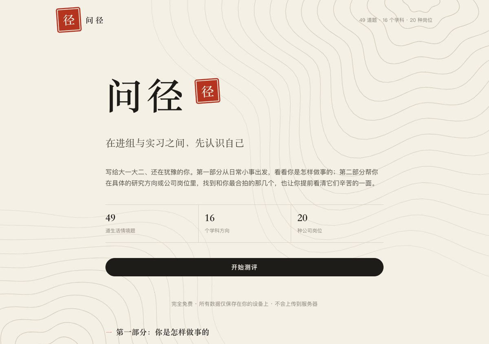
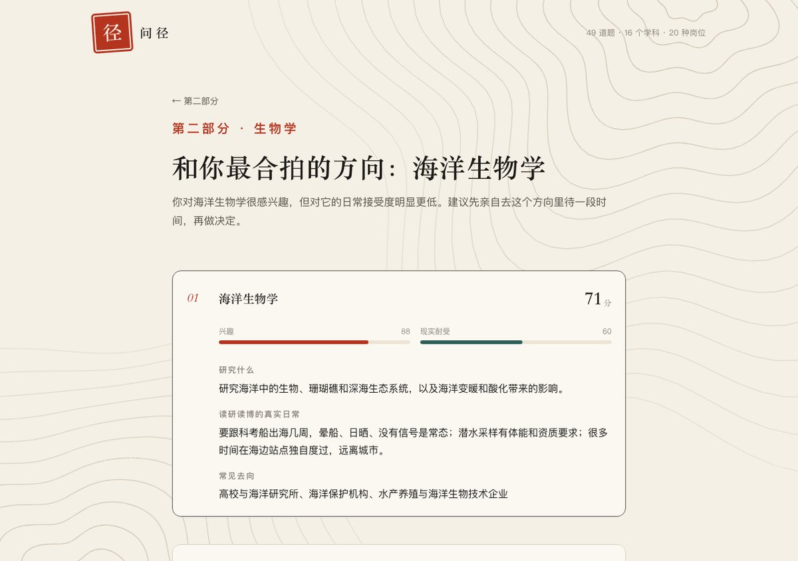

不问你「喜不喜欢科研」
所有题都从游戏、学习、周末、做作业这些场景切入。少了宏大叙事，你就不容易按「理想中的自己」作答。
免费 · 无需注册 · 答案只留在你的设备上
在进组与实习之间，先认识自己
写给大一大二、还在犹豫的你。49 道生活情境题看你怎么做事，再在 16 个学科、164 个研究方向、 20 种公司岗位里，找到和你最合拍的那几个 —— 也提前看清它们辛苦的一面。
seekmypath.cn · 完全免费，答完即走，不上传答案


所有题都从游戏、学习、周末、做作业这些场景切入。少了宏大叙事，你就不容易按「理想中的自己」作答。
每个方向都配了现实题：连续三个月做不出结果、凌晨三点去取样、跟科考船出海几周。喜欢和受得了，是两回事。
就业/科研倾向、八个维度的做事风格、方向排名，都能整理成一份 PDF 报告，方便慢慢看或给家人看。
49 道题，10–15 分钟。不显示分数，只告诉你更接近科研的节奏，还是实践的节奏。
感兴趣的学科或岗位，每项 3–8 分钟。可以测多项，每项测一次。
排名靠前的两三个，挑一个去实验室或实习里待一段。问卷只能缩小范围，答案还得你自己试出来。
进度只存在你自己浏览器的 localStorage 里，换设备不会同步，清除浏览器数据就没了 —— 服务器只负责发题目，不存任何答案。
大约 15 分钟
手机、平板、电脑都能用；不需要注册，也不用留邮箱。